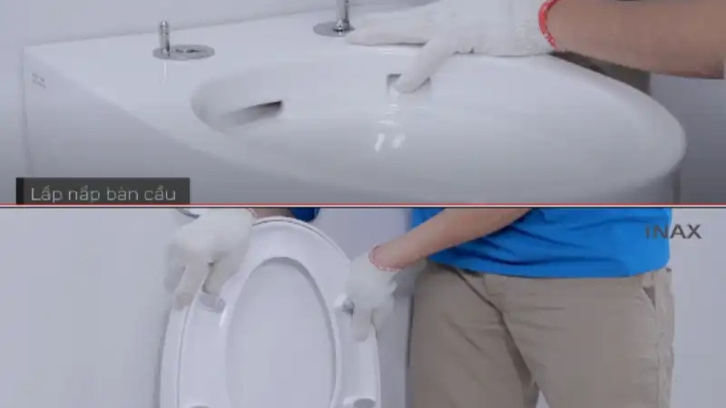

Ưu điểm vượt trội của bồn cầu treo tường Inax

Inax, thương hiệu thiết bị vệ sinh hàng đầu Nhật Bản, luôn đi đầu trong việc ứng dụng công nghệ tiên tiến và thiết kế đột phá vào sản phẩm. Bồn cầu treo tường Inax là minh chứng rõ nét cho điều đó, sở hữu những ưu điểm vượt trội so với bồn cầu truyền thống.
- Thiết kế tinh tế, sang trọng: Bồn cầu treo tường Inax sở hữu đường nét thiết kế tinh tế, hiện đại, phù hợp với nhiều phong cách thiết kế từ cổ điển đến hiện đại, mang đến vẻ đẹp sang trọng và đẳng cấp cho không gian phòng tắm. Kiểu dáng treo tường gọn gàng, tối giản giúp tiết kiệm diện tích tối đa, là giải pháp lý tưởng cho những phòng tắm có diện tích nhỏ hẹp.
- Tiết kiệm không gian tối đa: Lắp đặt bồn cầu treo tường Inax giúp giải phóng không gian sàn đáng kể, tạo cảm giác rộng rãi và thông thoáng hơn cho phòng tắm. Diện tích sàn trống cũng giúp việc vệ sinh dễ dàng và nhanh chóng hơn.
- Công nghệ xả mạnh mẽ, hiệu quả: Bồn cầu treo tường Inax được trang bị công nghệ xả tiên tiến như Tornado, Eco-X, tạo dòng nước xoáy mạnh mẽ, cuốn trôi mọi vết bẩn cứng đầu chỉ trong nháy mắt. Công nghệ xả Eco-X giúp tiết kiệm nước hiệu quả mà vẫn đảm bảo hiệu suất xả tối ưu.
- Vệ sinh dễ dàng: Bề mặt bồn cầu treo tường Inax được phủ lớp men Aqua Ceramic siêu nhẵn, chống bám bẩn, ngăn ngừa vi khuẩn và nấm mốc phát triển. Lớp men này giúp việc vệ sinh bồn cầu treo tưởng Inax trở nên dễ dàng và nhanh chóng hơn bao giờ hết, chỉ cần một thao tác lau nhẹ là bồn cầu đã sạch bong như mới.
- Độ bền vượt trội: Bồn cầu treo tường Inax được làm từ chất liệu sứ cao cấp, nung ở nhiệt độ cao, đảm bảo độ bền bỉ, chắc chắn và tuổi thọ lâu dài. Công nghệ sản xuất hiện đại của Inax mang đến cho sản phẩm khả năng chống bám bẩn, ố vàng, giữ cho bồn cầu luôn sáng bóng theo thời gian.
Tiêu chí chọn mua bồn cầu treo tường Inax phù hợp
Để lựa chọn bồn cầu treo tường Inax phù hợp với nhu cầu sử dụng và không gian phòng tắm, bạn cần lưu ý những tiêu chí sau:
- Xác định nhu cầu sử dụng: Trước khi mua bồn cầu treo tường Inax, bạn cần xác định rõ nhu cầu sử dụng của gia đình như số lượng thành viên, tần suất sử dụng, diện tích phòng tắm… để lựa chọn loại bồn cầu có kích thước, kiểu dáng và tính năng phù hợp.
- Lựa chọn kiểu dáng và màu sắc: Inax cung cấp đa dạng kiểu dáng bồn cầu treo tường từ đơn giản đến hiện đại, phù hợp với nhiều phong cách thiết kế khác nhau. Bạn nên lựa chọn kiểu dáng và màu sắc phù hợp với phong cách thiết kế chung của phòng tắm để tạo nên sự hài hòa và đồng bộ.
- Chú ý đến tính năng và công nghệ: Bồn cầu treo tường Inax được trang bị nhiều tính năng và công nghệ hiện đại như công nghệ xả xoáy, công nghệ xả tiết kiệm nước, công nghệ men sứ chống bám bẩn… Tùy theo nhu cầu sử dụng và ngân sách, bạn có thể lựa chọn sản phẩm phù hợp.
- Lựa chọn địa chỉ mua hàng uy tín: Để đảm bảo mua được sản phẩm chính hãng với chất lượng và chế độ bảo hành tốt nhất, bạn nên lựa chọn mua bồn cầu treo tường Inax tại các đại lý ủy quyền của Inax trên toàn quốc.
Kinh nghiệm lắp đặt bồn cầu treo tường Inax
Lắp đặt bồn cầu treo tường Inax đòi hỏi kỹ thuật và kinh nghiệm để đảm bảo tính thẩm mỹ và an toàn cho người sử dụng. Dưới đây là một số kinh nghiệm lắp đặt bồn cầu treo tường Inax bạn có thể tham khảo:
- Lựa chọn vị trí lắp đặt phù hợp: Vị trí lắp đặt bồn cầu treo tường cần được tính toán kỹ lưỡng, đảm bảo phù hợp với kết cấu tường nhà, hệ thống ống nước và tạo không gian sử dụng thoải mái cho người dùng. Nên tham khảo ý kiến của kiến trúc sư hoặc thợ thi công có kinh nghiệm để lựa chọn vị trí lắp đặt tối ưu nhất.
- Chuẩn bị dụng cụ và vật liệu cần thiết: Để quá trình lắp đặt diễn ra thuận lợi, bạn cần chuẩn bị đầy đủ dụng cụ và vật liệu cần thiết như: máy khoan, máy cắt gạch, thước dây, bút chì, xi măng, cát, keo dán gạch, ống cấp nước, ống thoát nước…
- Các bước lắp đặt bồn cầu treo tường:
- Lắp đặt khung xương và két nước âm tường: Xác định vị trí lắp đặt, khoan lỗ và cố định khung xương vào tường bằng tắc kê và vít nở. Lắp đặt két nước âm tường vào khung xương, kết nối đường ống cấp nước và thoát nước cho két nước.
- Ốp lát gạch, hoàn thiện tường: Sau khi lắp đặt khung xương và két nước, tiến hành ốp lát gạch men cho tường, che kín khung xương và két nước. Lưu ý chừa lỗ chờ cho đường ống cấp nước và thoát nước của bồn cầu.
- Lắp đặt bồn cầu: Kết nối bồn cầu với đường ống cấp nước và thoát nước đã chờ sẵn. Cố định bồn cầu vào tường bằng vít nở. Kiểm tra lại các kết nối và siết chặt để tránh rò rỉ nước.
- Hoàn thiện và kiểm tra: Hoàn thiện việc lắp đặt bằng cách trám kín các khe hở bằng silicon chống thấm. Kiểm tra lại toàn bộ hệ thống bằng cách xả nước, đảm bảo không có hiện tượng rò rỉ nước.
So sánh bồn cầu treo tường Inax với các thương hiệu khác
Dưới đây là bảng so sánh bồn cầu treo tường Inax với các thương hiệu khác:
| Tiêu chí |
Inax | Toto | Caesar | Viglacera |
| Xuất xứ | Nhật Bản | Nhật Bản | Đài Loan | Việt Nam |
| Giá thành | Cao | Cao | Trung bình | Thấp |
| Thiết kế | Tinh tế, hiện đại | Sang trọng, đẳng cấp | Đa dạng, hiện đại | Đơn giản, hiện đại |
| Công nghệ | Tiên tiến, tiết kiệm nước | Tiên tiến, thân thiện môi trường | Hiện đại, hiệu quả | Tiên tiến, phù hợp với nhu cầu người Việt |
| Chế độ bảo hành | 2-5 năm | 2-5 năm | 1-2 năm | 1-2 năm |
Bồn cầu treo tường Inax và Toto là hai thương hiệu cao cấp, sở hữu thiết kế sang trọng, công nghệ tiên tiến và chất lượng vượt trội. Bồn cầu treo tường Caesar có mức giá dễ chịu hơn, thiết kế đa dạng và chất lượng ổn định. Bồn cầu treo tường Viglacera là thương hiệu Việt Nam, giá thành rẻ, phù hợp với túi tiền của đại đa số người tiêu dùng.
Địa chỉ mua bồn cầu treo tường Inax chính hãng, giá tốt
Để mua được bồn cầu treo tường Inax chính hãng với giá tốt nhất, bạn nên lựa chọn mua sắm tại các đại lý ủy quyền của Inax trên toàn quốc. Dưới đây là một số đại lý Inax uy tín bạn có thể tham khảo:
- Hệ thống Showroom Inax chính hãng: Inax có hệ thống showroom rộng khắp cả nước, bạn có thể dễ dàng tìm kiếm showroom gần nhất để trải nghiệm và mua sắm sản phẩm.
- Website chính thức của Inax Việt Nam: Bạn có thể truy cập website chính thức của Inax Việt Nam để tham khảo thông tin sản phẩm, giá cả và chương trình khuyến mãi.
- Sàn thương mại điện tử uy tín: Các sàn thương mại điện tử như Tiki, Shopee, Lazada… cũng là kênh mua sắm tiện lợi và uy tín, bạn có thể dễ dàng tìm kiếm và so sánh giá cả sản phẩm từ các nhà bán hàng khác nhau.
Hướng dẫn sử dụng và bảo quản bồn cầu treo tường Inax
Hướng dẫn sử dụng và bảo quản bồn cầu treo tường Inax:
- Hướng dẫn sử dụng
- Sử dụng đúng cách xả nước của bồn cầu, tránh xả những vật dụng cứng, rác thải… vào bồn cầu gây tắc nghẽn.
- Không tự ý tháo lắp hoặc sửa chữa bồn cầu khi chưa có sự cho phép của kỹ thuật viên.
- Ngắt nguồn nước cấp cho bồn cầu khi không sử dụng trong thời gian dài.
- Vệ sinh và bảo quản
- Vệ sinh bồn cầu thường xuyên bằng dung dịch vệ sinh chuyên dụng, tránh sử dụng chất tẩy rửa có tính axit mạnh.
- Dùng khăn mềm lau chùi bề mặt bồn cầu, tránh sử dụng bàn chải cứng gây trầy xước men sứ.
- Kiểm tra định kỳ hệ thống van xả, đường ống cấp thoát nước để kịp thời phát hiện và khắc phục sự cố rò rỉ nước.
Bồn cầu treo tường Inax là giải pháp hoàn hảo cho không gian phòng tắm hiện đại, mang đến sự sang trọng, tiện nghi và tiết kiệm diện tích tối đa. Với thiết kế tinh tế, công nghệ tiên tiến và chất lượng vượt trội, bồn cầu treo tường Inax sẽ là lựa chọn lý tưởng để nâng tầm không gian sống của bạn.
Câu hỏi thường gặp (FAQ)
- Bồn cầu treo tường Inax có những ưu điểm gì?
Bồn cầu treo tường Inax có nhiều ưu điểm vượt trội như: thiết kế sang trọng, tiết kiệm diện tích, công nghệ xả mạnh mẽ và tiết kiệm nước, bề mặt men chống bám bẩn, dễ vệ sinh, độ bền cao. - Giá bồn cầu treo tường Inax có đắt không?
Giá bồn cầu treo tường Inax dao động từ khoảng 7 triệu đồng đến vài chục triệu đồng tùy thuộc vào model, tính năng và đại lý phân phối. - Lắp đặt bồn cầu treo tường Inax có phức tạp không?
Lắp đặt bồn cầu treo tường Inax đòi hỏi kỹ thuật và kinh nghiệm, bạn nên nhờ đến thợ thi công chuyên nghiệp để đảm bảo an toàn và hiệu quả sử dụng. - Bảo hành bồn cầu treo tường Inax như thế nào?
Thời gian bảo hành bồn cầu treo tường Inax từ 2-5 năm tùy thuộc vào từng dòng sản phẩm. Bạn nên mua hàng tại các đại lý ủy quyền của Inax để được hưởng chế độ bảo hành chính hãng. - Mua bồn cầu treo tường Inax ở đâu uy tín?
Bạn nên mua bồn cầu treo tường Inax tại các đại lý ủy quyền của Inax trên toàn quốc, hệ thống showroom Inax chính hãng hoặc các sàn thương mại điện tử uy tín.